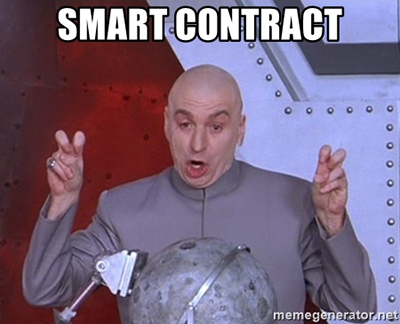

Welcome!
Intro To Solidity Part I

Our Sponsor

Thank you to Springlabs for sponsoring our event this evening!
Agenda
- Introductions
- Blockchain basics
- Ethereum
- Dev Tools
- Smart Contract code
- Kseniya Lifanova: Co-founder, Partner and Software Developer at Upstate Interactive, Founder of DAppLadies
- Swati Mazumder: Founder at SyncSol | Developer, Analyst, Technology Enthusiast, DAppLadies Member
- Shanee Dinay: Software Engineer at Spring Labs, DAppLadies Member
Satoshi Nakamoto
In November 2008, Satoshi Nakamoto published a whitepaper titled Bitcoin: A Peer-to-Peer Electronic Cash System. This laid the groundwork for the bitcoin protocol and the first blockchain database.
Blockchain
A blockchain is a time-stamped series of immutable records of data that is managed by a cluster of computers not owned by any single entity. Each of these blocks of data are secured and chained to each other using a cryptographic signature. You can think of this blockchain as a ledger, which can be shared and accessed by anyone with the appropriate permissions.
Key Points
http://pages.cs.wisc.edu/~akella/CS740/F08/740-Papers/Bar64.pdf
- Distributed
- Decentralized
- Immutable
- Transparent
Ethereum
Ethereum
- A new blockchain with a more general scripting lanuage
- Allows you to build applications that could run globally without any central authority
- Optimized for software developers!
EVM
- Ethereum Virtual Machine
- One big computer

Traditional Web App Architecture
Decentralized App Architecture
Applications
- financial applications
- semi-financial applications
- non financial applications
Smart Contracts

- applications that can be deployed on the Ethereum blockchain
- written in Solidity
- compiled into EVM bytecode
Solidity

- object oriented programming language used to write smart contracts
- influenced by C++, Python and Javascript
- easy to learn for programmers
Tools
- Remix
- Truffle Suite
- Parity
- Geth
- Test networks
- MetaMask
Remix
A browser-based compiler and IDE that enables users to build Ethereum contracts with Solidity language and to debug transactions.
Truffle Suite
- Truffle: a development environment, testing framework and asset pipeline for blockchains using the EVM
- Ganache: a personal blockchain for Ethereum developers to deploy contracts, develop apps, and run tests
- Drizzle: a collection of front-end libraries that make writing dapp front-ends easier
Test Networks
- Ropsten: the one that most resembles the main network, uses Proof of Work consensus algorithm
- Rinkeby: uses Proof of Authority consensus algorithm, you need to prove your existence in order to retrieve ethers
- Kovan: uses same consensus algorithm as Rinkeby
Parity and Geth
- Both are Ethereum clients
- Full nodes that are capable of mining and signing transactions
- Parity written in Rust
- Geth written in Go
https://www.parity.io/ethereum/ https://geth.ethereum.org/downloads/
MetaMask

MetaMask is a browser plugin that allows users to make Ethereum transactions through regular websites. It allows you to run Ethereum dApps right in your browser without running a full Ethereum node.
Let’s Look at some code
Contracts
- Solidity’s code is encapsulated in contracts
- all variables and functions belong to a contract
- compiled into EVM bytecode
pragma solidity ^0.5.0;
contract MyContract {
}
State Variables
State variables are permanently stored in contract storage. This means they are written to the Ethereum blockchain.
pragma solidity ^0.5.0;
contract MyContract {
uint value = 100;
int value = -100;
struct Person {
uint age;
string name;
bool verified;
}
bool exists;
}
State Variables
Arrays
pragma solidity ^0.5.0;
contract MyContract {
// Array with a fixed length;
uint[2] fixedArray;
// Dynamic array of integers;
uint[] dynamicArray;
// Dynamic array or strings;
string[] stringArray;
// Dynamic array of People structs;
Person[] peopleArray;
}
State Variables: Address
- Ethereum blockchain is made up of accounts
- Each account has an address
- An account can be owned by a specific user or smart contract
0x0cE446255506E92DF41614C46F1d6df9Cc969183
contract MyContract {
// owned by a user
address public user;
// owned by a smart contract
address public smartContract;
// array of addresses
address[] public players;
}
State Variables: Mappings
- A way of storing organized data in Solidity
- A mapping is essentially a key-value store for storing and looking up data
contract MyContract {
// For a financial app, storing a uint that holds the user's account balance:
mapping (address => uint) public accountBalance;
// store / lookup usernames based on userId
mapping (uint => string) userIdToName;
// store / lookup to see if an address has voted
mapping (address => bool) voted;
}
Global Variables
There are certain global variables that are available to all functions
msg.sender
msg.value
contract MyContract {
// store / lookup to see if an address has voted
mapping (address => bool) voted;
function vote(string _candidate) {
// code
voted[msg.sender] = true;
}
// For a financial app, storing a uint that holds the user's account balance:
mapping (address => uint) public accountBalance;
function sendFunds(address _to) {
accountBalance[_to] = _accountBalance[to].add(msg.value);
}
}
Storage vs Memory
Storage: variables stored permanently to the blockchain Memory: variables that are temporary and erased between external function calls
Functions
contract MyContract {
uint public userAge;
string public userName;
function addUser(string _name, uint _age) {
userAge = _age;
userName = _name;
}
addUser("Kseniya", 33);
}
Public vs Private
Public: anyone or any contract can call your contract’s function Private: only you or a function in your contract can call the function
contract MyContract {
uint private userAge;
string private userName;
function _addUser(string _name, uint _age) private {
userAge = _age;
userName = _name;
}
addUser("Kseniya", 33);
}
Return Values
contract MyContract {
uint public userAge;
string public userName;
function addUser(string _name, uint _age) {
userAge = _age;
userName = _name;
}
function getAge() public returns (uint) {
return userAge;
}
addUser("Kseniya", 33);
// returns 33;
getAge();
}
Modifiers
Modifier are like a prerequisites check of the function
contract MyContract {
uint public userAge;
string public userName;
function addUser(string _name, uint _age) {
userAge = _age;
userName = _name;
}
function getAge() public view returns (uint) {
return userAge;
}
function _multiply(uint a, uint b) private pure returns (uint) {
return a * b;
}
function getAge() public onlyOwner returns (uint) {
return userAge;
}
addUser("Kseniya", 33);
}
Events
Events are a way for your contract to communicate what happened on the blockchain to your front-end, which can be listening for events and take action when they happen.
contract MyContract {
event UserAdded(string _name, uint _age);
uint public userAge;
string public userName;
function addUser(string _name, uint _age) {
userAge = _age;
userName = _name;
emit UserAdded( _name, _age)
}
addUser("Kseniya", 33);
}
Require
contract MyContract {
uint public userAge;
string public userName;
address public userAddress;
// userAddress to boolean
mapping (address => bool) public userExists;
function addUser(string _name, uint _age) {
require(userExists[msg.sender] == false);
userAge = _age;
userName = _name;
userAddress = msg.sender;
userExists[msg.sender] = true;
}
addUser("Kseniya", 33);
}
Inheritance
Inheritance can be used for logical inheritance (subclass) or for organizing your code to group similar logic.
contract Ownable {
address public owner;
function setOwner() public {
owner = msg.sender;
}
}
contract MyContract is Ownable {
uint public userAge;
uint public userName;
function addUser(string _name, uint _age) public {
userAge = _age;
userName = _name;
}
}
Internal vs External
private, public, internal, external
Internal- the same as private, except it’s also accessible to contract that inherit from this contract.
External- similar to public, except these functions can ONLY be called outside the contract.
Internal vs External
contract Ownable {
address public owner;
function setOwner() internal {
owner = msg.sender;
}
}
contract MyContract is Ownable {
uint public userAge;
uint public userName;
function addUser(string _name, uint _age) public {
userAge = _age;
userName = _name;
}
// we can call this function
setOwner();
}
Why does it matter?
Resources
Next Class
We will be building a Payment DApp!
Homework
Make sure you have node installed.
Install a Solidity extension for your text editor:
npm install -g truffle
npm install -g ganache-cli
npm install openzeppelin-solidity